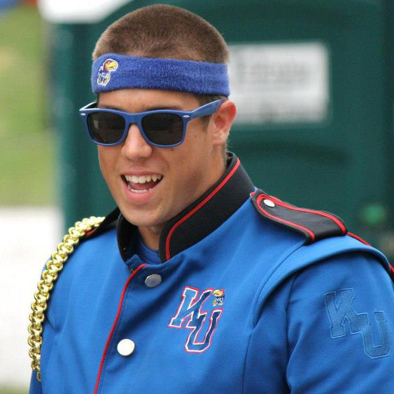

About Me
Welcome to my website! My name is Joe Aniello and I am a full stack web developer from Wichita, Kansas. I am currently transitioning careers from Division I college athletics, where I spent five years in various ticket operations roles at some of the most notable programs in the country. A recent graduate of the University of North Carolina Coding Boot Camp, I found my strengths to be in backend development through the use of languages like JavaScript, JQuery, and React as well as databases such as mySQL and MongoDB. My goal with this career move is to better understand the technology that makes our daily lives easier and work to make it accessible and easier to use for everyone.
I most recently worked for University of North Carolina Athletics as an Assistant Director of Ticket Operations. Before joining UNC, I spent a little over a year at Texas Tech as a Post-Graduate Intern in their athletics ticket office, and prior to that I started as a Graduate Assistant at Wichita State while obtaining my Master's in Sport Management. My professional background through these positions has primarily revolved around customer service and business development, which has taught me how to streamline business processes and technological interfaces for a faster, simpler, and more user friendly customer experience. With this unique professional background along with the coding skills I have learned through the bootcamp, I believe I have the expertise to bridge these two fronts and provide valuable insight throughout the development process.
Some fun facts about me... I am originally from Kansas, spent part of my childhood in Colorado, but moved to North Carolina from Texas in 2017. My favorite movie franchise is Star Wars. My favorite video game franchise is Assassin's Creed (I got my start on that series with Black Flag). I played the sousaphone in marching band at the University of Kansas; I married my wife, Natalie, in November of 2019; and I have an inexplicable ability to recall a vast amount of movie and TV trivia.